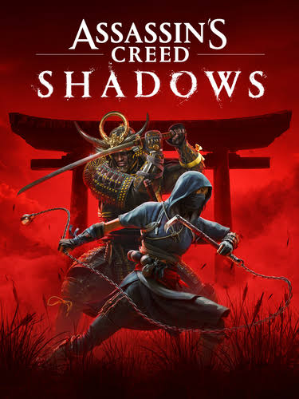

Filmes e Séries

Fonte: Acervo Cinema & Arte / Divulgação
As produções de ficção científica continuam liderando as estreias nos serviços de streaming, trazendo roteiros complexos e efeitos visuais cada vez mais realistas.

Fonte: Banco de Imagens Unsplash
Minisséries de suspense e documentários investigativos também ganharam destaque entre o público que busca maratonas intensas no fim de semana.
Música e Podcasts

Fonte: Estúdio Som Digital / Divulgação
O consumo de áudio sob demanda transformou a rotina diária, unindo playlists personalizadas por algoritmos e álbuns independentes de alta qualidade sonora.
Fonte: Banco de Imagens Pexels
Os videocasts consolidaram-se como o principal formato de entrevistas longas, conectando especialistas, artistas e ouvintes em debates aprofundados.
Games e Tecnologia

Fonte: Portal TechPlay / Divulgação
Os jogos de mundo aberto e os títulos independentes (indies) mostram que a criatividade narrativa é tão importante quanto o poder gráfico das novas gerações.

Fonte: Hardware Brasil / Arquivo
Avanços em inteligência artificial, realidade virtual e computação em nuvem estão redefinindo a forma como jogamos e interagimos no ambiente digital.